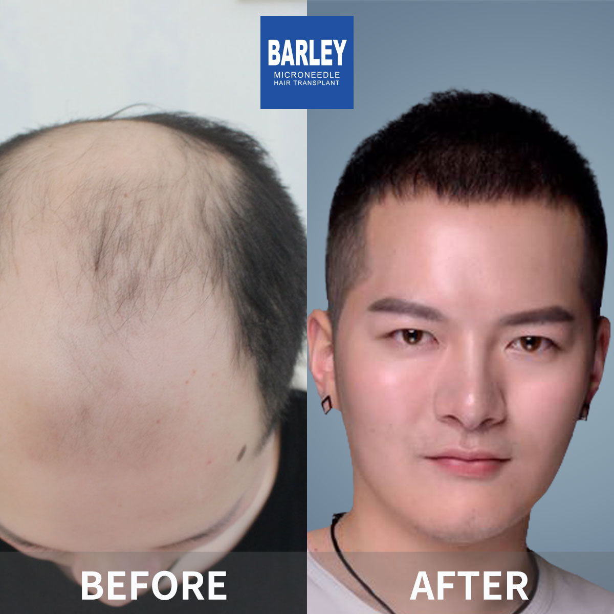
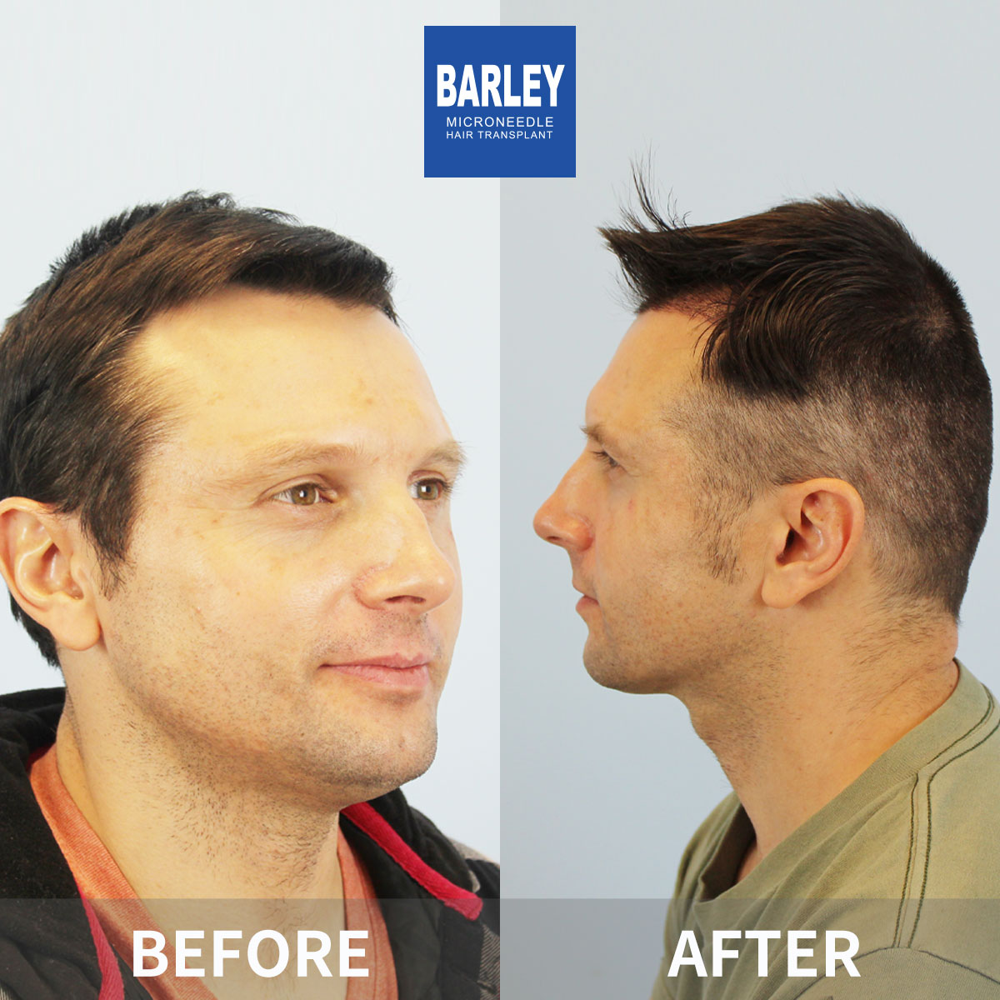
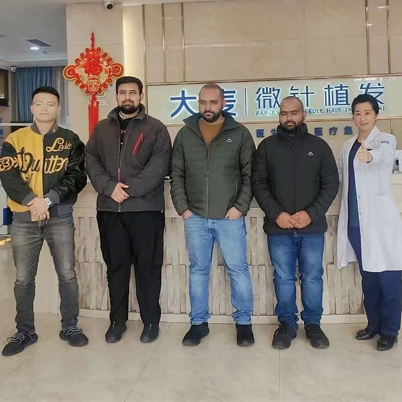
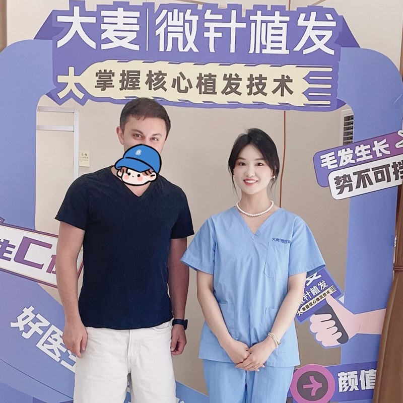

The initial fortnight following your surgery represents the most crucial period. Newly implanted grafts remain delicate and require adequate time to develop proper blood circulation and anchor firmly within your scalp. Throughout this vital window, adhering precisely to your surgeon's cleansing guidelines becomes your top priority. Apply only warm water and the specialized shampoo we provide. Avoid scratching, rubbing, or removing scabs prematurely — allow them to detach naturally. Rest with your head raised to minimize swelling, and refrain from physical activity, swimming, or direct sunlight until your physician approves.
After this initial recovery phase concludes, maintaining optimal scalp condition becomes essential for preserving both your transplanted and native hair. Choose sulfate-free, gentle formulations that preserve your scalp's natural moisture balance. Numerous patients report that incorporating biotin supplements, consuming protein and iron-rich foods, and periodic PRP sessions accelerate healing and enhance new growth quality. Avoid aggressive chemical processes, excessive heat styling, and restrictive hairstyles that stress your follicles. Every Barley Hospital patient receives a customized aftercare schedule and continuous access to our medical staff for any questions that arise.
Apply warm water and a gentle, sulfate-free cleanser. During the initial seven days, pour water over your scalp using a cup rather than allowing direct showerhead contact. Carefully blot your hair dry with a soft cloth — avoid rubbing. Following two weeks, resume your standard washing schedule, using gentle circular motions with fingertips and keeping nails away from the scalp.
Your scalp remains highly vulnerable to ultraviolet radiation for a minimum of 4-6 weeks post-surgery. When outdoors, wear a loose hat or apply mineral-based SPF 30+ sunscreen once your scalp has sufficiently healed. Excessive sun exposure can trigger pigmentation changes and impede graft recovery.
A diet abundant in protein, iron, zinc, biotin, and vitamins A, C, D, and E supplies your body with essential nutrients for robust hair growth. Incorporate eggs, nuts, leafy vegetables, fish, and lean proteins into your meals. Inadequate nutrition can delay recovery and compromise new hair strength.
We arrange appointments at 1, 3, 6, and 12 months enabling our physicians to monitor graft development, identify potential concerns early, and modify your care regimen accordingly. These consultations are included in your treatment package and ensure you remain on course for optimal outcomes.
At Barley Hospital, we carefully select products that are gentle on recovering scalps and promote healthy hair development. Our post-operative care package features a mild, sulfate-free shampoo free from parabens and synthetic fragrances, a conditioning treatment enriched with keratin and argan oil to reinforce hair strands, and a calming scalp serum containing panthenol and aloe vera to soothe irritation. For continued maintenance, we recommend biotin-based growth serums, peptide scalp treatments, and natural oil blends featuring rosemary and peppermint — ingredients scientifically supported for enhancing scalp circulation and activating follicles. Every product carries our medical team's endorsement and can be purchased directly from our facility. We never suggest products containing harsh chemicals, drying alcohols, or anything that might aggravate a healing scalp.
Professional guidance to safeguard your grafts and achieve optimal outcomes

Your surgeon devoted hours meticulously positioning each graft — proper aftercare ensures they flourish. At Barley Hospital, we deliver a comprehensive aftercare system featuring clinically validated products formulated specifically for transplant recipients. Adhere to our protocols to preserve your results and maintain your existing hair health. Our team accompanies you from day one through complete recovery and beyond.
Comprehensive support throughout your entire hair restoration process
Clinical-quality care extending beyond retail options
Clear direction for each healing phase
Delicate cleansing and critical protection period
Gradual return to standard hair care
Supporting graft anchoring and proper healing
Preserving and enhancing long-term outcomes
Professional recommendations for safe, effective hair care
Ongoing access to our clinical specialists
Tangible advantages from our professional hair care program
Our products are engineered specifically for post-transplant hair, facilitating optimal healing and growth without compromising graft viability or triggering scalp irritation.
Distinct care protocols for the immediate post-surgical period, active healing phase, and long-term maintenance. You'll receive precise instructions aligned with each recovery stage.
Our care recommendations are developed and supervised by hair restoration physicians with over 18 years of clinical experience — not generic guidance from unqualified sources.
Globally trusted with visible results
Pioneering microneedle technology since 2006
Consistent quality across all locations
Proprietary microneedle and implant systems
Trusted by patients worldwide
Dedicated support for international patients
Advanced facilities with strict protocols
Outcomes from patients who adhered to our aftercare programs





Genuine experiences from patients who followed our aftercare protocols

Celebrating healthier, fuller hair

Delighted with healthier, stronger results

Pleased with the scalp treatment outcomes

Satisfied with the care received

Feeling excellent with healthier hair

Thrilled with the improvement

Delighted with the outcomes

Highly satisfied with the aftercare program
Authentic feedback from our international patients
"The aftercare guidance I received was incredibly thorough. They provided a comprehensive schedule detailing exactly when to apply the saline spray, the correct method for cleansing my scalp during those initial two weeks, and when I could safely resume my regular routine. I adhered to everything precisely, and my results demonstrate the effectiveness — 97% of grafts survived successfully at my one-year evaluation."
"I was quite concerned about the scabbing that occurs post-surgery. The care team suggested a mild baby shampoo and demonstrated a specific washing method that softened scabs without disturbing the grafts. By day ten, my scalp was completely clear and the transplanted area appeared entirely natural."
"The nutritional supplements they recommended throughout my recovery made a significant impact. The combination of biotin, zinc, and vitamin D genuinely supported my hair growth during the shock loss phase. At six months, the density was noticeably superior to what I'd anticipated for that stage."
"The follow-up care surpassed my expectations. Even after returning to Buenos Aires, the team contacted me weekly during that first month to monitor progress. They provided videos demonstrating the proper technique for scalp massage to enhance circulation, and the outcomes have been remarkable."
"I was anxious about sleeping arrangements after surgery. The care team provided a specialized travel pillow that maintained my head elevation at the ideal angle throughout those first two weeks. It prevented swelling and ensured the grafts remained undisturbed. Simple solution, but remarkably effective."
"The specialized post-care shampoo and conditioner significantly improved how my hair felt during the growth phase. The keratin-enriched formula reinforced both transplanted and existing hair. My hair is now visibly denser and healthier than before the procedure."
Contemporary, comfortable environments designed for your care

Cutting-edge treatment facility

Comfortable patient waiting area

Fully sterile and equipped

Private and professional

Relaxing space after treatment

Warm and welcoming entrance
Professional guidance for post-transplant and daily hair maintenance
Reach out for a complimentary consultation
15810155700
+86 13730143529
hairtransplant@qq.com